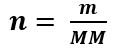
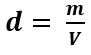
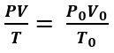
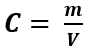
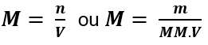
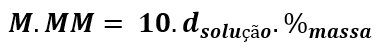
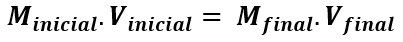
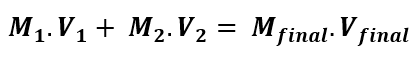
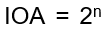

Principais fórmulas usadas na Química
Quantidade de matéria (número de mols)
Densidade
Atomística:
Número de massa
A = Z + n (ou A = p + n)
Relações numéricas (cálculos químicos):
Número de Avogadro:
NA = 6,02.1023 mol-¹
Volume molar de gases nas CNTP:
22,4 L.mol-¹
Estudo dos Gases Ideais:
Equação de Clapeyron
P.V = n.R.T
Equação geral dos gases
Soluções:
Cálculo da concentração comum
Cálculo da molaridade
Relação entre unidades de concentração
Diluição
Mistura de duas soluções de mesmo soluto
Equilíbrio Iônico
Cálculo de pH e pOH:
pH = – log [H+]
pOH = – log [OH-]
A 25°C: pH + pOH = 14
Eletroquímica
Cálculo da ddp:
Lei de Faraday
Q = i.t
Constante de Faraday
1 F = 96500 C = 1 mol de elétrons
Isomeria
Número de isômeros opticamente ativos:
(n = número de carbonos quirais)
Número de isômeros opticamente inativos:
 (n = número de carbonos quirais)
(n = número de carbonos quirais)